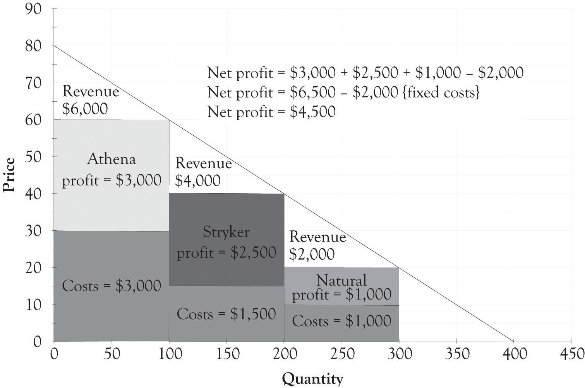
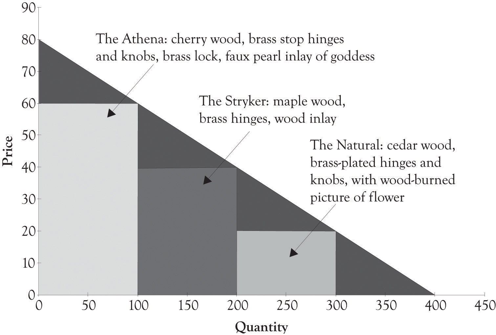
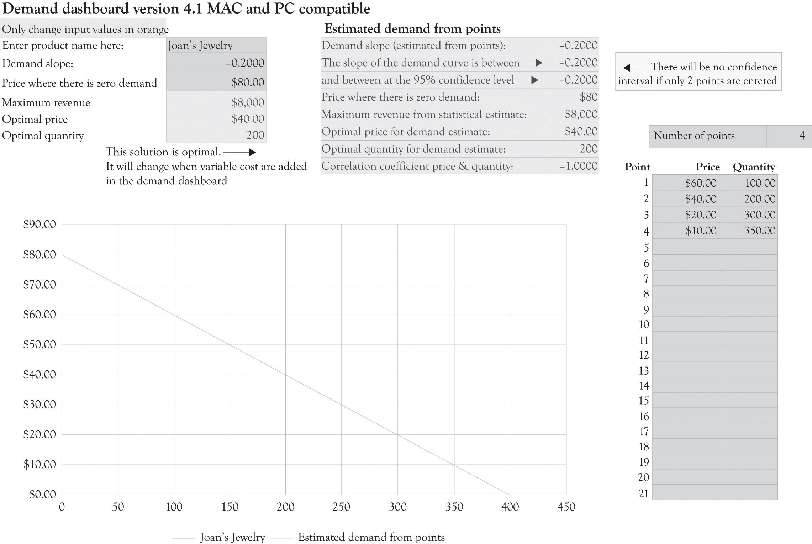

Joan started out as a tinkerer in her garage. She had a band saw and a table saw and started making wooden toys for her kids. She then decided to make a jewelry box for her daughter. Her daughter and husband were so impressed that she showed the box to all of her family and friends. Word started to get around and soon Joan was getting calls to make the jewelry boxes for numerous customers. She sold the jewelry box for a flat price of $40. It costs Joan about $20 for the wood, the fasteners, and decorations. Joan made a tidy little profit of $20 per box. She enjoyed being a craftsperson and enjoyed the extra income.
Joan worked as an economist for the city government and decided she would like to start a side business making jewelry boxes. She named her business Joan’s Handcrafted Jewelry Boxes. Joan subsequently started applying her economic training to launching her jewelry box business.
She knew that understanding how much consumers are willing-to-pay for different products and services was critical to running any business. Over the course of several years, Joan had offered the jewelry box at several different prices and, as a result, she had a good feel for the demand for her jewelry boxes at different price levels. She also had many discussions with her customers and potential customers on the amount they would be willing to pay for a jewelry box. She would actually ask her friends and customers how much they would be willing to pay for pearl inlays, exotic woods, and gold-plated hinges. Joan would sometimes send out questionnaires to customers who bought her jewelry boxes asking them what they liked and did not like about their jewelry box.
Joan took the task of understanding consumer preferences and the demand for jewelry boxes very seriously. Joan went so far as to sell her jewelry boxes with different woods and features on a local Internet auction. The Internet auction gave her very precise information on how much customers would be willing to pay for the jewelry box features. Joan had a friend who was in the jewelry business and she also asked her about market demand.
Joan took all the information, integrated it with local demographic and economic information, and developed a forecastTo calculate or predict a future condition based on pertinent data. and demand curve for her jewelry boxes in the surrounding county. There were approximately 720,000 families in the region and Joan estimated that she could, at most, sell to 0.5% of these families over the course of a year in the current economic environment. She was confident that income levels would not change dramatically over the next year. Joan then used all these information to develop a monthly demand curve for jewelry boxes.
Figure 3.1 "Demand Curve for Jewelry Box" presents a 1-month demand curve for Joan’s jewelry boxes in her county. The curve was derived after Joan determined that if she charged $60 she could sell 100 units, at $40 she could sell 200 units, and at $20 she could sell 300 units. Joan also spent time examining all the costs that she would incur building the jewelry boxes in her newly remodeled garage. Her garage was now a small factory. She found that the variable and fixed costs are different for each type of jewelry box. After spending considerable time examining the costs and the revenues, Joan decided to sell only one type of jewelry box at a price of $40.
Figure 3.1 Demand Curve for Jewelry Box

Figure 3.2 Revenue With One Type of Jewelry Box Selling for $40

Joan determined that she could make a small profit by selling the box for $40. The revenue generated by selling only one model of her jewelry box is illustrated in Figure 3.2 "Revenue With One Type of Jewelry Box Selling for $40". Her fixed costsCosts that do not change regardless of sales. , consisting of rent, utilities, and tool maintenance, would run about $2,000. The variable costsExpenses that change according to production output. for the wood, fasteners, and decorations would be about $15 when bought in bulk quantities. The monthly revenue from the business would be $8,000 ($40 × 200) and the profit from the business would be $3,000. The contribution marginThe amount remaining from sales revenues after deducting all variable expenses. is the difference between the selling price and the variable cost to produce each jewelry box. The contribution margin for each jewelry box is $25. The calculations for profit, using q as the quantity and p as the price, are as follows:
Total revenue = p × q Total revenue = $40 × 200 Total revenue = $8,000 Profit = Total revenue − Total variable costs − Total fixed costs Profit = p × q − Vc × q − Fc Profit = $40 × 200 − $15 × 200 − $2,000 Profit = $8,000 − $3,000 − $2,000 Profit = $3,000Joan really enjoyed owning a business and being an entrepreneur, but she wanted more. After rereading an interesting article on price discrimination by Hal Varian,Varian (1996). Joan decided to expand her product line. Expansion was easy because she had plenty of floor space and could hire one of her talented nephews to assist in producing the boxes. Joan understood the relationship between price discrimination and profitability and this led her to design an additional high-end version and a low-end version of her jewelry box.
Figure 3.3 Potential Revenue When Adding Versions

The fixed costs for the two new products were about the same. In addition, the variable cost for the high-end jewelry box was $30 and the low-end jewelry box was $10. As illustrated in Figure 3.3 "Potential Revenue When Adding Versions", this resulted in additional revenue of $2,000 for the high-end jewelry box and $2,000 for the low-end jewelry box. Now that there is a high-end jewelry box, 100 customers will purchase the high-end box instead of the middle-level box. There are also 100 new customers who will now be willing to pay for a $20 jewelry box. The total revenue for the three boxes is $12,000. The net profit with only one type of jewelry box was $3,000. The net profit with three versions was $4,500 as illustrated in the following calculations:
Profit = ($60 − $30) × 100 + ($40 − $15) × 100 + ($20 − $10) × 100 − $2,000 ← {fixed costs} Profit = $3,000 + $2,500 + $1,000 − $2,000 Profit = $6,500 − $2,000 Profit = $4,500Notice that there are only 100 additional people purchasing the $40 box because 100 customers are now purchasing the high-end jewelry box for $60. There are also only 100 people who will purchase the low-end box. If Joan just adds the high-end box, her profit will increase from $3,000 to $3,500. If she just adds the low-end box, then her profit will increase from $3,000 to $4,000. If she adds both a low-end and high-end box, her net profit will increase from $3,000 to $4,500. The decision to expand and offer additional product versions is complex and will have a profound effect on her business model. She will of course examine her current operations and cost structure and make decisions on what versions, if any, that she will produce.
After considerable soul searching and analysis, Joan decides to introduce three different jewelry box versions. Figure 3.4 "Financial Structure for Three Versions of Joan's Jewelry Boxes" illustrates the financial profile for the three jewelry versions designated as the Athena, the Stryker, and the Natural. Figure 3.5 "Differentiating Features for Three Versions of Joan's Jewelry Boxes" provides an overview of how the features of each version of the jewelry box are used to differentiate each version.
Figure 3.4 Financial Structure for Three Versions of Joan's Jewelry Boxes
Figure 3.5 Differentiating Features for Three Versions of Joan's Jewelry Boxes
The Athena jewelry box is a high-end product targeted toward nonprice-sensitive consumers. It is part of what we refer to as a Midas product that was extravagantly engineered and designed. The Natural jewelry box is a Hermes product and is targeted toward price-sensitive consumers, and it was frugally engineered and contains basic features. The Stryker jewelry box is an Atlas product designed for the middle ground. The Stryker has several attractive features; yet it is still priced between Midas and Hermes versions. The Stryker is a mainstream version that appeals to the widest audience. Additional motivation behind the three versions will be presented in Chapter 5 "Examples of Product Differentiation & Versioning Curves".
It might appear obvious that the goal is to extricate as much as possible from the universe of consumers. But many large and small businesses, for reasons of simplicity, turn to the one-product, one-price solution in order to have a simplified management agenda. Adding additional product versions introduces complexity and requires additional investment in the supply chain as well as having an impact on the cost structure for each version. The one-version, one-price approach is a natural solution for the harried entrepreneur who has gazillion things to worry about. However, offering just one version is not a good strategy for several reasons.
If Joan offers only the high-end version, then the profit accrued will be $1,000 [($60 − $30) × 100 − $2,000]. If Joan offers only the low-end version, then the profit accrued would be $1,000. If Joan decides to offer only one product, then it makes sense to go with the middle-level product and the middle-level price, where the profit is $3,000. However, such a strategy leaves a lot of money on the table. First, the high-end consumers would be willing to pay more for the product. Economists call this additional amount they are willing-to-pay as consumer surplus. The consumer surplusThe difference between the amount the nonprice-sensitive or affluent person would be willing to pay for the high-end product and how much they actually paid for the product. is the difference between the amount the nonprice-sensitive or affluent person would be willing to pay for the high-end product and how much they actually paid for the product. Second, price-sensitive consumers can be drawn into the market if an affordable option is made available.
By adding two additional versions, Joan has dramatically increased the present value of her business. A very simple way to calculate the value of a business is to use the perpetual annuity formula of cash-flow/cost-of-capital. If we assume a cost-of-capital number of 10%, then having one product leads to a firm value of $360,000 (12 × $3000/0.10). The present value of the business with three products is higher at $540,000 (12 × $4,500/0.10). The business is worth $540,000 rather than $360,000. There is a $180,000 difference. (Additional discussion on the time value of money and how it affects the value of the firm will be presented in a later chapter.)
From the above discussion, we can infer that offering two or more versions of a product is a better strategy than offering only one version. We believe that the best strategy is to always offer at least three different versions of a product; that is, a high-end version, a middle range version, and a low-end version. Varian refers to this type of price discrimination as Goldilocks pricing. However, the value of price and product differentiation goes above the short-term profit considerations. Versioning is critical for long-term survival of the firm because price and product differentiation puts the firm closer to consumers. Versioning helps the seller to understand what product and features are desired by consumers. Versioning is a form of experimentation that affords the seller the opportunity to conduct experiments by introducing versions of products with different features and observing how consumers react.
Price and product differentiation permits consumers to acquire goods that they want at their price point. Consumers come in a variety of sizes with different wants and satisfaction levels and different levels of discretionary income. They have different degrees of their willingness-to-pay for products and services. Price and product differentiation can not only facilitate the extraction of money from the affluent, but it can also benefit the four billion people who live on less than $1,500 per year.Prahalad (2006). This is the so-called bottom-of-the-pyramid. Indeed, price and product differentiation is the basic strategy for selling to the bottom of the pyramid and for providing pharmaceuticals, health care, and many other products to the poor.
We are sometimes asked whether the low-end product will cannibalize the demand for the higher-priced products. That is, will affluent consumers with more money who are less price-sensitive buy the low-end product and ignore more expensive products? This can, of course, occur if the products are not perceived as being adequately differentiated with higher-end features and additional functionality. The key activity for the producer is to conduct experiments by offering differentiated products and watching economic buying behavior unfold.Traditional marketing analysis techniques such as focus groups can still be used to identify features. However, they are just part of the input used to identify product versions. The information garnered from these experiments can then be used to continually refine product offerings and understand the willingness-to-pay functions of your consumers. In essence, if the buyers flock to the low-end product, then this information can be used in future product design decisions.
We have developed a spreadsheet tool that can be used to assist in product differentiation. You are encouraged to visit http://glsanders.wordpress.com/ and obtain the newest version of the spreadsheet. You are also encouraged to read the Appendix of this chapter because it contains an overview of the math for identifying the optimal price and quantity for a demand equation.
Figure 3.6 "Demand Analysis Dashboard" illustrates the demand spreadsheet for Joan’s jewelry. The demand dashboard spreadsheet is used to calculate the slope and the maximum amount consumers would be willing to pay for a product. Figure 3.7 "Differentiation Dashboard Using Demand Analysis Dashboard Input and Financial Data from Joan" presents a differentiation dashboard spreadsheet. The differentiation dashboardUsed to determine profitability due to product differentiation. Also computes an optimal solution for the demand curve when only one version is offered. is used to determine the profitability due to product differentiation. The differentiation dashboard also computes an optimal solution for the demand curve when only one version is offered. The optimal price would be $47.50 and, at that price, Joan would sell 162.5 jewelry boxes. As you can see from the solution in Figure 3.7 "Differentiation Dashboard Using Demand Analysis Dashboard Input and Financial Data from Joan", the monthly cash flow using the optimal solution yields a monthly profit of $3,281.25, which is still not very close to the monthly net profit of $4,500 with three versions. The value of the business would be $393,750 if we assume a cost-of-capital value of 10% (12 × $3,281.25/0.10). The optimal solution is very helpful for identifying a starting point for selecting a price point for one product and for identifying price points for additional versions. The differentiation dashboard is very useful for conducting sensitivity analysis and what-if analysis for differentiating up to three products and services.
Figure 3.6 Demand Analysis Dashboard
Figure 3.7 Differentiation Dashboard Using Demand Analysis Dashboard Input and Financial Data from Joan

Monopolistic competition involves many buyers, many sellers, and easy entry and exit with one difference. The sellers in these markets sell products that are closely related, but not identical. Joan sells jewelry boxes that are similar to other jewelry boxes in function and form, but they are nevertheless different. They are differentiated from the competition. Joan’s products are unique and differentiated because of their features (handcrafted, unique words, styling, etc.) and her unique brand.
As noted earlier, a purely competitive market has many buyers and sellers and each individual firm is a price taker. In this market, the price for a product or service is determined via market interactions (buying and selling) between consumers and producers. In perfectly competitive markets, there are many sellers, many buyers, and entry into and out of the market is easy. In a perfectly competitive market, Joan would price her jewelry boxes at prevailing market prices where marginal revenue equals marginal cost. In actuality, Joan can function as a quasi-monopolist or as a near-monopolist in the short term until the competition recognizes that they can make money selling unique jewelry boxes.
Most of the action in business involves not just the product line, but also the markets for related products and services. There are three key concepts related to product and service differentiation and the type of related goods being offered; they are independent, substitute, and complementary goods and services.
Two goods are independentProducts with consumption or use that are not related. if their consumption or use is not related. The use of toothbrushes, for example, is not related to the consumption or use of motorcycles. Independent goods are goods that are not dependent in any way on how the other good is used. Since demand for one does not affect the demand for the other, product differentiation has little impact on these types of product trade-offs.
Much of the interesting economic activity in terms of strategy and differentiation comes from complementary and substitute products and services. Complementary goodsGoods typically used together. When the demand for one complement increases, the demand for the other good increases as well. are typically used together. When the demand for one rises, for example, burgers, it leads to a rise in demand for the other product, for example, fries. Examples of complementary products and services include toothbrushes and toothpaste, PCs and monitors, travel services and global positioning systems, console game systems and broadband demand, and operating systems and business applications suites. In the case of Joan’s jewelry boxes, a complementary good would be an expensive wood polish to maintain the wood or perhaps a limited line of earrings that could be placed in the jewelry box as part of a gift.
Substitute goodsInterchangeable goods with equivalent functions. When the demand for one substitute increases, the demand for the other good decreases. are goods that are alike. In other words, substitute goods have an equivalent function and one substitute good can be consumed or used in place of another. They are largely interchangeable and when the demand for one substitute increases, the demand for the other good decreases. Examples of substitute services include cable systems and satellite systems. Although they work very differently, they can be effectively substituted for one another. Other examples include margarine and butter, satellite phones and cell phones, powdered and liquid laundry detergent, and CDs and MP3 files. None of these products are actually perfect substitutes because they all have slightly different features and have different performance characteristics. A perfect substitute works essentially the same way and has the same features and qualities as another technology. In practice, many competing technologies are imperfect substitutes. MP3 files are imperfect substitutes for CDs because CDs produce better sound than MP3 files. However, MP3 files are smaller and more easily copied than CDs. Butter and margarine are slightly differentiated in terms of taste and the way our bodies assimilate these two fats. In the case of Joan’s jewelry boxes, product substitutes would be any jewelry box or container that could be used to house jewelry. This would include a plastic food storage container, a vase, or even a glass.
It is a fundamental economic principle that the way to maximize profits is to charge a price that equates to the value of the product to each consumer, instead of selling at a uniform price to all consumers. This is the idea behind price discrimination.As noted in the last reading, the terms price discrimination and price differentiation can, in general, be treated as synonymous. Companies use price discrimination to differentiate prices. Pure price discriminationInvolves selling the same good at different prices to different consumers. involves selling the same good at different prices to different consumers. Flat pricingThe producer starts at the top price of the demand curve and then ratchets the price down. The flat price selected is a function of how the fixed costs and variable costs lead to the highest profit. can have perverse consequences, because it encourages the producer to sell to the high end of the market.Varian (1996). The producer simply starts at the top price of the demand curve and then ratchets the price down. The flat price selected is a function of how the fixed costs and variable costs lead to the highest profit. Producers who understand differential pricing have a strong incentive to supply several versions of a product because they will usually make more money. Rather than sell the same exact good at different prices, the goal should be to modify a product and sell a differentiated product at different prices. This could be accomplished using the following strategies:
There are two situations that lead to very high demand for products. The first involves scarcity. When a product is scarce, it is usually in demand. Price discrimination is easy for scarce products, even though such situations are sometimes transitory (e.g., snow blowers during extended winter storms, games consoles at launch, and oil consumption in the winter). The other approach to generating high levels of demand is to design products that make people and their kids look smarter or more attractive. Products that give kids an academic edge are always in demand. Parents will flock to such products because they may be able to differentiate their children from the competition.
There are several lessons that can be learned from monopolistic behavior (and misbehavior) for those interested in engaging in monopolistic competition. The first lesson that can be gleaned relates to the behavior of the cable TV companies. Monopolies tend to take their customers for granted, as was the case with cable TV subscribers in previous decades. As soon as alternate products became available with better features, such as those provided by satellite and optical fiber carriers, consumers started to abandon the cable TV ship. They felt little allegiance to cable providers because of the years of neglect. The cable provider’s strategy was to make a profit by providing few existing and new features, keep raising subscription rates, and providing poor service. There was enduring ill will toward cable providers because they did not constantly differentiate and improve their services and they were unwilling to streamline costs. Service has improved dramatically and, in some instance, surpasses the competition, but the remnants of ill will survive.It is ironic that some of the ill will that was directed at cable companies is now being directed at satellite TV carriers. The lesson is that quality customer service and perception management are never-ending processes.
Companies have to be very cautious how they use price differentiation to personalize prices lest they incur the wrath of customers. Amazon found this out in 2001 when they started to sell their DVDs at different prices.
The price test, which ran early last week, affected dozens of Amazon’s top-selling titles. Because of the test, which assigned prices at random to customers as they shopped, some customers found DVDs at prices up to $15 greater than other customers. Amazon spokesman Bill Curry said that Amazon would reimburse customers who ordered DVDs affected by the test for the difference between the price they paid and the lowest test price. Although Amazon has no plans to do any more pricing tests, the company guarantees that should it run another one, customers will pay the lowest test price even if they order goods at a higher price during the test.Wolverton (2000).
Personalized pricing can tick-off consumers when consumers find out that they are paying a premium for the same product or service. Some of the current ill will directed toward the airline companies is related to the wide range of prices charged for identical seats and, of course, to their very proficient use of versioning in the form of baggage surcharges, meals, early boarding, and fast tracking through security. In 1995, the average U.S. domestic price for an airplane ticket was $292.See the Research and Innovative Technology Administration Bureau of Statistics site at: http://www.bts.gov/programs/economics_and_finance/air_travel_price_index/html/annual_table.html In 2009, the average airplane ticket price was $309. This is equivalent to $220 in 1995. The airlines turned to product differentiation in order to achieve profitability.
It is sometimes necessary for producers to use approaches that disguise personalized pricing approaches. Here are a few of the strategies used by businesses to engage in product and service differentiation; some of them are more acceptable to consumers than others:
It should be noted that some consumers will figure out how to game these systems. They will then pass this information on and it will eventually reach a substantial number of consumers as the specter of efficient markets looms its ugly head.
InnovationThe introduction of something new. comes in waves. It is driven by consumers in the form of demand for better products and services: “I need a smaller product with more features and capabilities at a lower price.”
Substitute and complementary products are part of the engine that drives innovation. For example, transportation has spurred the development of substitute energy sources such as steam, electric, fuel cells, and solar energy. The emergence of the automobile was the driving force behind the development of better roads, fueling stations, and diners. Demand for clearer and faster communication has been the key driver for many modern-day substitute products as illustrated in Figure 3.8 "Innovation Driven by Substitutes and Complements". This has in turn driven the development of a wide range of products to support the communication process.
Figure 3.8 Innovation Driven by Substitutes and Complements
When I was a youngster in Helena Montana, I wanted to learn how to play the bongo drums like Desi Arnaz.The “I” is Sanders. I went to a local store and inquired about the cost for a set of bongo drums. I believe that they wanted $40; this was too much money and I decided to forgo the purchase and take up the tuba because it was available through the school.I eventually got the bongos as a Christmas gift from my grandmother. She bought them from JC Penney’s for a substantially lower price. I found out a year later that the same bongos were available in a mass-market catalog for a lot less money. I possessed inferior information on the value of the bongos. Information asymmetryOccurs when the seller has better information about the value of a product than the buyer. occurs when the seller has better information about the value of a product than the buyer. In many situations, it is the seller who knows more about the value of a product than the buyer; however, it is possible that the buyer knows more about the value of the product than the seller. Selling a product at a higher price in a market where consumers are not knowledgeable or privy to the true market price is called arbitrage. ArbitrageSelling a product at a higher price in a market where consumers are not knowledgeable or privy to the true market price. can lead to excess profits and inefficiencies in the supply chain because the consumer cannot turn to other suppliers and because the consumer does not know the competitive price for the product and/or cannot get access to competitively priced products. Arbitrage presents the opportunity for suppliers and producers to exploit the consumer’s lack of product knowledge and earn higher profits.
Arbitrage is very important to commodity traders. Arbitrage enables the seller to buy a product, such as a commodity, in one market and sell the product in another market for a higher price. The arbitrageur makes money by taking advantage of the price disparity by selling in one market while simultaneously buying in the other. Excess profits are symptomatic of asymmetric information and inefficient markets. When someone knows more than someone else about a product, they will often use that information to achieve above-average profits or to secure resources at a steep discount. The benefactor of the windfall rarely views good deals as gluttonous. The number of suppliers and consumers for bongos in Helena Montana during the 1960s was very small, and there were very few opportunities to locate musical instrument catalogs that contained bongo drums. This is asymmetric information at work. A market is efficient when price discovery is easy and information is transparent and readily available to all market participants.
Arbitrage can also hurt the producer of a low-cost item. Someone could buy all of Joan’s low-cost jewelry boxes, repackage the jewelry box, add a little do-dad, and then sell them at a higher price in the same market. This could effectively reduce her high-end revenues. Continuous product differentiation along with marketing and searching for the most up-to-date information can reduce the impact of arbitrage. This can be summed up in the following relationship:
Information Asymmetries → Arbitrage → Bad Deals.As we have seen in this chapter, product differentiation leads to additional revenues and is the basis for conducting experiments for determining what products and product versions to introduce in the future. We have also discussed how substitute and complementary products and services further drive innovation. Subsequent chapters will explore how product differentiation forms the basis for experimentation, innovation, and product development.
In this chapter, we have illustrated how price discrimination could be applied to Joan’s jewelry box case and optimum prices for product versioning could be derived. The key takeaways include the following:
Even though Joan is an economist, her knowledge of the market for jewelry boxes was based on experience and insight. She understands the market because she has bought and sold jewelry boxes and their raw materials and she has built them from scratch. Joan decided she should put some of her economics training to work and determine the ideal price and quantity to sell that would generate the most profit.
The typical demand curve has the price on the y-axis and the quantity demanded on the x-axis and is downward-sloping.See the following Web site for a good discussion of the Law of Demand: http://www.investopedia.com/terms/l/lawofdemand.asp A demand curve can be represented as a linear mathematical formula with quantity as the dependent variable (q = −5p + 400) or with price as the dependent variable (p = −5q + 80). A demand curve is a very useful diagram for describing the relationship between the price level and the quantity demanded at each price level. In general, as the price of a product increases, the demand for the good decreases. Similarly, as the price of a product decreases, the demand for the good increases. This section discusses how the demand curve can be used to identify the optimal price and quantity for selling just one version of a product.
Since Joan is a near-monopoly working in a market characterized by monopolistic competition, she can set her variable costs and fixed costs within certain limits related to the features she has established for her Jewelry boxes. Joan used algebra to come up with the optimal selling price for her standard jewelry box. This is the price that generates the greatest profit given the $15 variable costs and the $2,000 fixed costs.
Her first task was to develop a demand equation. The demand equation relates the quantity of the good demanded by consumers to the price of the good. Demand equations are in the form: Price = constant + slope*Quantity. This can be calculated by finding the slope of the curve using any two points (see Figure 3.9 "Two Points Are Used to Derive the Demand Curve"). We will use the points (q1, p1) or (100, $60) and (q2, p2) or (200, $40). The slope is the rise over the run or:
Slope = (60 − 40)/(100 − 200) Slope = 20/−100 Slope = −0.2The constant is calculated by determining where the demand line crosses the y-axis or, in this situation, the price or P-axis. This is accomplished by using the point slope form of the demand equation and any point such as (100, $60). The resulting constant is 80.
p − p1 = slope(q − q1) p − 60 = −0.2(q − 100) p = 60 + 0.2q + 20 p = 80 − 0.2qFigure 3.9 Two Points Are Used to Derive the Demand Curve

In many instances, the demand curve is expressed in terms of p because the price determines the amount demanded. You can just substitute a price into the following formula and find out how many units will be sold.
q = −5p + 400So if Joan decides to price each box at $50, then she will be able to sell 150 units.
Now that the demand equation has been found (p = −0.2q + 80 or q = −5p + 400), Joan’s next step was to determine the quantity where profits are maximized. This is accomplished by identifying where marginal revenue equals marginal cost. This is completed in two steps. The first step is to substitute the demand curve equation into the total revenue equation in order to get the total revenue calculation in terms of the quantity sold or q.
p = 80 − 0.2q Total revenue = p × q Total revenue = (80 − 0.2q) × q Total revenue = 80q − 0.2q2The above equation can be used to express the total revenue as a function of the quantity produced. We can check this answer by substituting 200 into the total revenue equation. For example, the total revenue when production is 200 units would be 80 × 200 − 0.2 × 2002 or $8,000. This is the same value for total revenue using the p × q equation for total revenue ($40 × 200 = $8,000).
The second step is to find the quantity where marginal cost equals marginal revenue. This is accomplished by taking the first derivative of the total revenue equation with respect to q. This is then set to the marginal cost and then solved for q. The marginal cost is actually the variable cost in this example. The marginal cost to produce one additional jewelry box is $15.
Total revenue = 80q − 0.2q2 Marginal revenue = dtr/dq = 80 − 0.4q Marginal revenue = Marginal cost 80 − 0.4q = 15 −0.4q = −65 q = 162.5The 162.5 quantity is rounded up to 163 and then substituted into the p = 80 − 0.2q equation.
p = 80 − 0.2(163) p = 47.4The 47.4 price was rounded down to $47. This is the short-term optimal revenue solution.
Profit = $47 × 163 − $15 × 163 − $2,000 Profit = $3,216Joan decided after her analysis to produce fewer jewelry boxes since she could make more money selling fewer boxes at a higher price. She could have done a similar analysis using spreadsheet software and come up with a similar solution. She would, however, still need the original demand function along with an understanding of her variable and fixed costs to produce the jewelry boxes.
The demand dashboard can also be used to determine the optimum solution when there are three jewelry boxes. The optimum solution is calculated using a mathematical programming algorithm that is usually referred to as a solver add-on in spreadsheet programs (see Figure 3.10 "Optimal Profit with Three Versions of Jewelry Boxes"). The solver essentially identifies the price for the Athena, the Stryker, and the Natural that would maximize profit with all the other variables such as the variable costs remaining the same.
As you can see from Figure 3.10 "Optimal Profit with Three Versions of Jewelry Boxes", the optimal Athena price would be $76.25 and about 19 units would be sold. The optimal price for the Stryker would be $57.50 and about 94 units would be sold. The Natural would be priced at $33.75 and would sell 119 units. The net profit for all three versions would be $5,672. This is in contrast to the non-optimized solution of $4,500. Joan just picked prices for each version using her intuition and insight into what consumers would be willing to pay.
Figure 3.10 Optimal Profit with Three Versions of Jewelry Boxes

You should note that the optimal solution for only having the Atlas product is $3,281. This is little different than the $3,216 solution obtained using the algebraic solution detailed in the last section because we rounded the price and quantity in the algebraic solution.
The optimal solution provides insight into the demand curve and the product mix, but it is not a magic potion for setting prices and developing versions. There are a number of factors that go into identifying the price and the characteristics for each version. There might be significant setup costs for constructing the Athena or, perhaps, it would be difficult to find artistically talented employees to work on the fake pearl inlays for just a couple of hours. Perhaps Joan does not want to focus on the Natural because she wants to eventually focus on upscale jewelry boxes and she is concerned that her product would not be considered a high-end offering because of the proliferation of inexpensive jewelry boxes. And, of course, it is very difficult to actually know if the demand curve is valid for all levels of prices.
The demand curve for a good does not have to be linear or straight. As illustrated in Figure 3.11 "Nonlinear Demand Curve for Joan's Jewelry Boxes", the demand curve could be curvilinear. It appears that the price at which there is no demand is $80 and that there is essentially unlimited demand for jewelry boxes that cost $15. Let us examine how a different and, in particular, a nonlinear curve could influence the amount of revenues generated. Using Figure 3.11 "Nonlinear Demand Curve for Joan's Jewelry Boxes", if Joan charges $60 for the Athena unit, she would sell 50 units. If she charged $40 for the Stryker model, she would sell 50 units (100 − 50). If she charged $20 for the Natural, she would sell 150 units (250 − 100). If Joan still had the same variable cost structure as before, she would generate the following revenues and profit:
Profit = ($60 − $30) × 50 + ($40 − $15) × 50 + ($20 − $10) × 150 − $2,000 ← {fixed costs} Profit = $1,500 + $1,500 + $1,500 − $2,000 Profit = $4,500 − $2,000 Profit = $2,500Figure 3.11 Nonlinear Demand Curve for Joan's Jewelry Boxes
This amount is noticeably less than the $3,216 algebraic solution ($47 × 163 − $15 × 163 − $2,000) for the single version where it was assumed that demand was linear. This example illustrates that a slight miss in identifying the appropriate demand function can have a dramatic impact on profitability. Even though the demand and differentiation dashboards can only deal with linear relationships, we can estimate a linear function using only a portion of the demand curve. It appears that there is a linear relationship within the price range of $20–$80. The price where demand is zero (the Y intercept) and the slope of the demand curve were both estimated using the demand analysis dashboard as illustrated in Figure 3.12 "Demand Curve for Nonlinear Estimation". Figure 3.13 "Joan's Profit Using Estimates of Nonlinear Demand" shows the solution for the nonlinear demand curve using the differentiation dashboard. The key difference for this solution versus the solution that was presented earlier in the chapter is that the demand curve was estimated using points that were not linear with a linear regression algorithm. This leads to several interesting results.
Figure 3.12 Demand Curve for Nonlinear Estimation
Figure 3.13 Joan's Profit Using Estimates of Nonlinear Demand
The profit for one product using the optimal solution for the nonlinear curve is $1,415.69. Using Figure 3.13 "Joan's Profit Using Estimates of Nonlinear Demand", again you can see that when the original variable and fixed costs are entered in the differentiation dashboard, three versions produce a net profit of $2,458. This is in contrast to the $4,500 profit for the three versions using the original linear demand curve.
When the demand is nonlinear, economists use “tricks” to transform a nonlinear demand data into a linear formula.Oz Shy (2008). For example, they take the natural log of the price and quantity data and then perform the regression analysis in order to develop an estimate of the function. The trick I used was to estimate the demand function by only using prices between $20 and $80.
If a new product is being introduced, then there may not be any data available for estimating a demand curve. Historical data are often scarce or nonexistent for new products and significantly revised versions of products. Sometimes, the entrepreneur has only two points for estimating demand. The first point is where the price crosses the Y-axis. This is essentially the maximum amount that most consumers would be willing-to-pay for a product. The second point is also a guestimate using a hypothetical question. What demand would result if we were to introduce a product at the prevailing market price using typical product features?
The key takeaway is that it is difficult to model consumer demand when products are new and untested, and even where there is a proliferation of historical data, it is still a difficult task. Another takeaway is that versioning will almost always generate more revenues and also greater profits in the long run. The crucial activity is to constantly experiment and continuously introduce product versions in order to understand the constantly changing nature of consumer behavior. Quantitative tools can provide insight, but they should be used to provide insight and not used as a sole solution for pricing and versioning products.
From an economist point of view, the primary goal of versioning is to capture consumer surplus. As one of my economist colleagues (Bill Hamlen) noted, it is very difficult to develop a reasonable mathematically grand optimal solution for capturing consumer surplus with even two versions. Economists have not attempted to tackle the problem of versioning because of the mathematical complexity. I have taken the liberty of using the same demand curve for all the versions. In reality, there is a separate demand curve for each version. Bill Hamlen suggested that since it is so difficult to find a grand optimal solution, that I should continue the approach used in the book because it still provides an insight into the important issue of capturing consumer surplus from a strategy perspective.